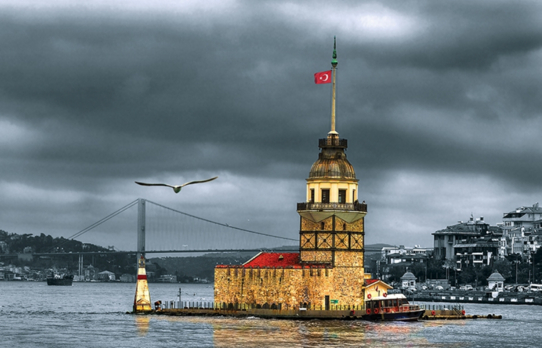

Kız Kulesi, hakkında çeşitli rivayetler anlatılan, efsanelere konu olan, İstanbul Boğazı'nın Marmara Denizi'ne yakın kısmında, Salacak açıklarında yer alan küçük adacık üzerinde inşa edilmiş yapıdır.